Author: Sijin Yu
InternVideo 论文笔记1. Information2. Abstract3. Model3.1 Overview3.2 Masked Video Encoder3.3 Multimodal Video Encoder3.4 Cross Model Attention3.5 预训练超参数设置4. Experiment & Result4.1 与 SOTA 的对比5. Conclusion
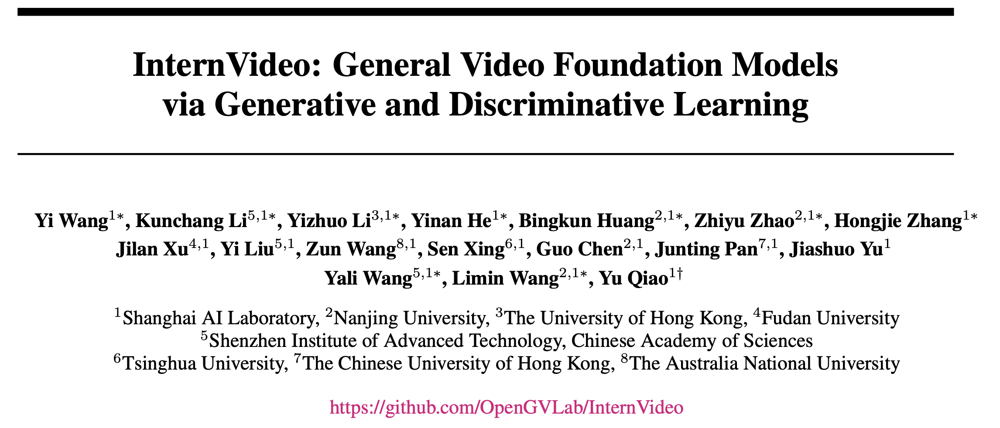
标题: InternVideo: General Video Foundation Models via Generative and Discriminative Learning
arXiv URL: https://arxiv.org/abs/2212.03191
code: https://github.com/OpenGVLab/InternVideo
发布时间: 2022 年 12 月
基础模型最近在计算机视觉的各种下游任务中表现出优异的性能.
但是, 大部分现存的视觉基础模型都只是简单地关注于图像水平的预训练, 它们缺乏在动态且复杂的视频水平上的预训练.
为了填补这一空白, 我们利用生成式、判别式自监督视频模型, 提出一种通用的视觉模型, InternVideo.
具体地, InternVideo 使用了 Masked Video Modeling 和 Video-language Contrasive Learning 为预训练目标, 并以可学习的方式有选择地协调这两个完整框架的视频表示, 以增强各种视频下游应用.
InternVideo 在 39 个视频数据集上达到了 SOTA, 包括视频动作识别/检测, 视频语言对齐, 开放世界视频应用. 我们的模型在 K400 和 SSV2 上分别达到了 91.1% 和 77.2% 的 top-1 准确率. 这些结果展现了 InternVideo 在视频理解上的泛化能力.
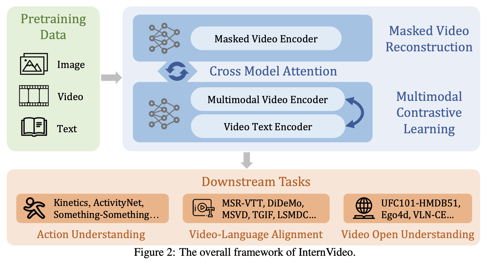
使用两种自监督模型, 学习视频的表达: Masked Video Reconstruction 和 Multimodal Contrastive Learning.
使用 Cross Model Attention, 综合两个自监督模型的优点, 获取更好的视频表达.
在下游任务中针对性有监督学习.
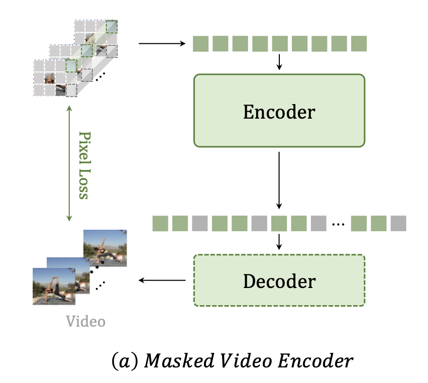
使用 VideoMAE 作为 Encoder, ViT 作为 Decoder.
Decoder 的通道数是 Encoder 的一半, 默认有四个 blocks.
对于一个未被 masked 的视频输入:
在时间上下采样, 降低帧数.
将视频在时间上分组, 分成不重叠的 3D patches 块.
每个 3D patch 被线性映射到一个 cube embedding (立方体嵌入). [⚠️注: cube embedding 是一个拥有三个维度的 embedding.]
对这些 cube embedding, 使用 tube masking, [⚠️注: 这是一种掩盖或遮挡部分嵌入值的方法, 只保留其中的一部分信息.] 使用高 masked 率 (如 90%).
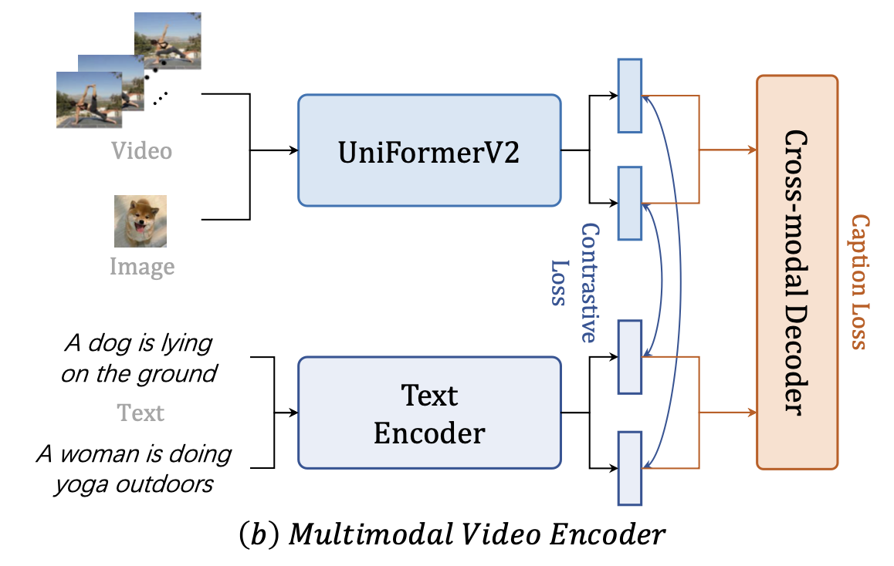
使用 UniFormerV2 做 Video Encoder. [⚠️注: UniFormerV2 可见我的博客: 点击访问 UniFormer & UniFormerV2 论文笔记.]
使用 align-before-fuse 范式:
视频和文本分别编码.
在 align (对齐) 阶段, 使用对比学习损失去对齐视频和文本的嵌入空间.
在 fuse (融合) 阶段, 使用一个 caption decoder (字幕解码器) 作为跨模态融合器.
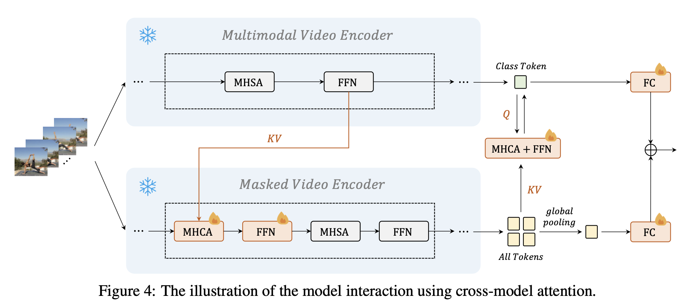
只有红色部分是可训练的. 其余部分为 frozen.
KV 表示 key 和 value, Q 表示 query.
下图: 预训练的超参数设置.
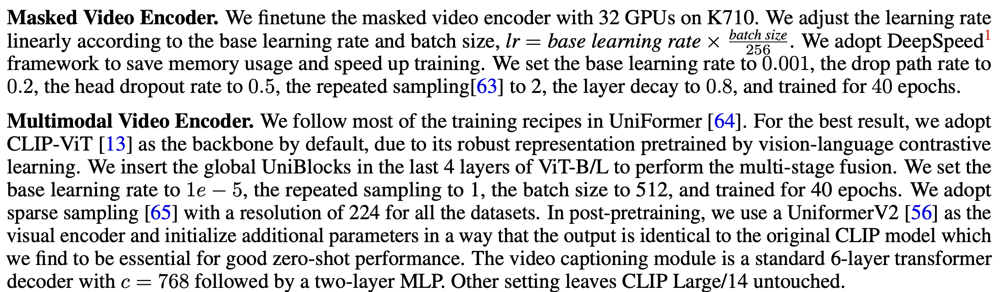
下图: 预训练使用的数据集和采样设置.
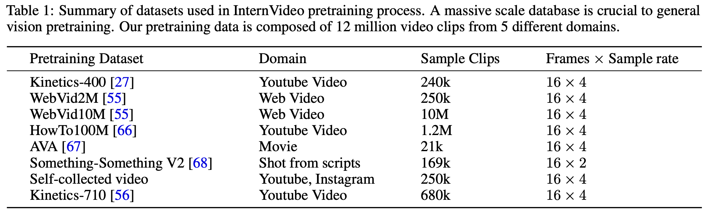
下图: [Action Recongition 动作识别] 在 K400/600/700 上的对比.
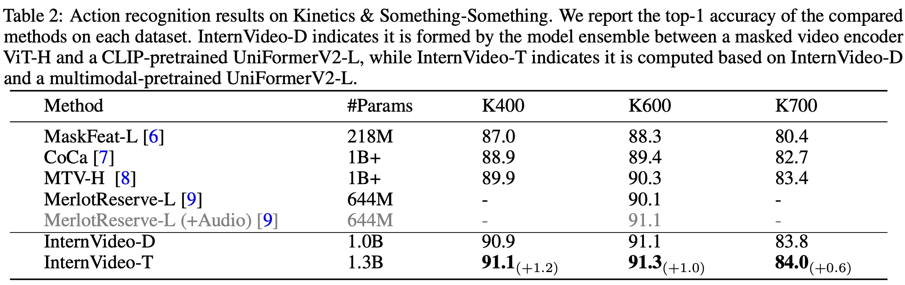
下图: [Action Recongition 动作识别] 在 SSV1/V2, ActivityNet, HACS, HMDB51 上的对比.
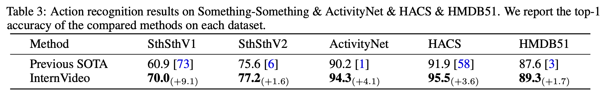
下图: [Temporal Action Localization 时间动作定位] 在 THUMOS-14, Activitynet-v1.3, HACS, FineAction 上的对比.
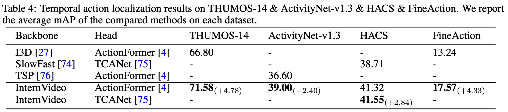
下图: [Spatiotemporal Action Localization 时空动作定位] 在 AVA2.2, AVA-Kinetics 上的对比.
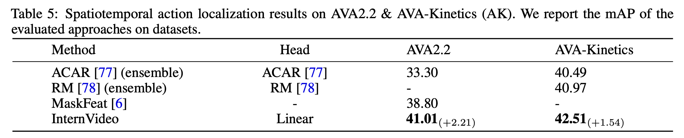
下图: [Video Retrieval 视频检索] 在 MSR-VTT, MSVD, LSMDC, ActivityNet, DiDeMo, VATEX 上的对比.
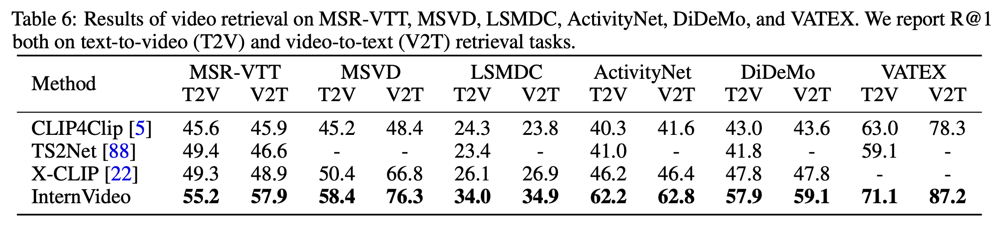
下图: [Video Question Answering 视频问答] 在 MSRVTT, MSVD, TGIF 上的对比.
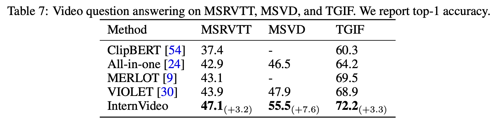
原文还做了不少其它的下游任务, 此处略.
下图: InternVideo 在多个下游任务、多个数据集上均达到了 SOTA.
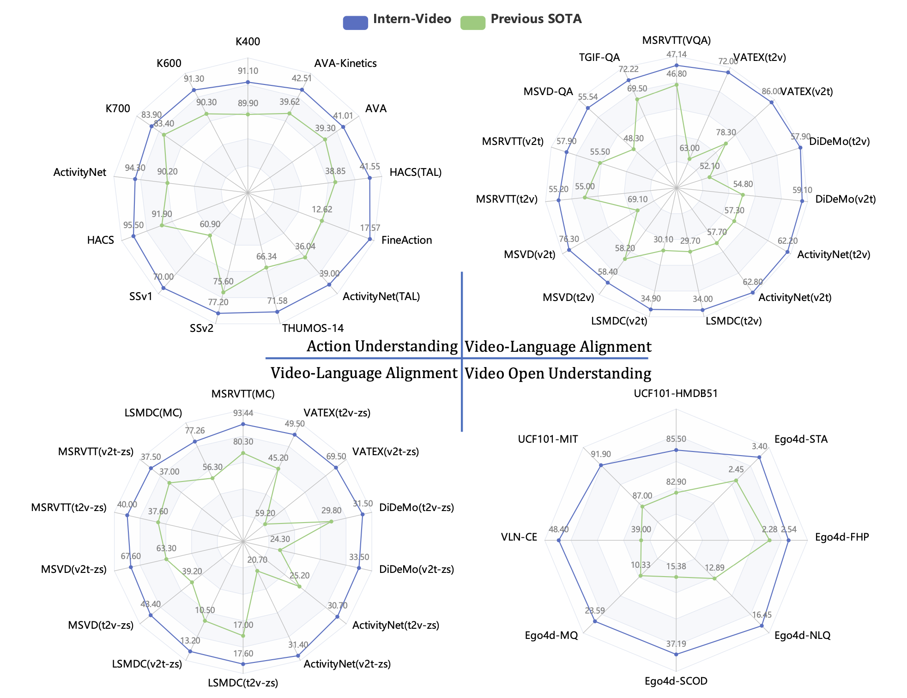
主要贡献:
将此前的 UniFormerV2 和 VideoMAE 相结合, 设计了 Video Masked Model 和 Video-Language 对比学习.
在各种下游任务取得了非常好的成绩.